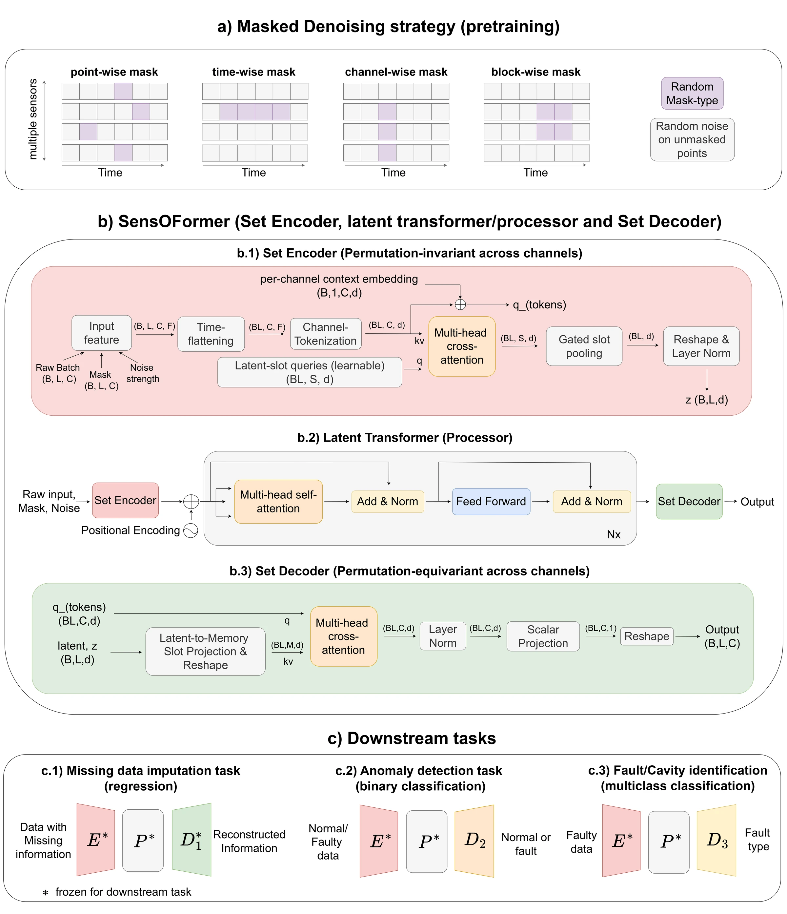
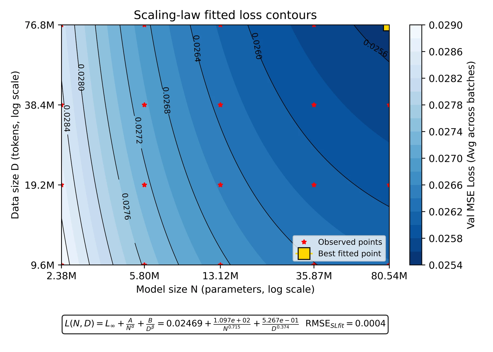

01
Problem
Every facility speaks a different sensor language.
Channel sets, sample rates, sequence lengths, physical units, and operating conditions vary across accelerator subsystems and acquisitions.
To our knowledge, the first foundation model for particle-accelerator telemetry.
A self-supervised transformer learns one shared representation from five accelerators—even as sensor sets change—and transfers it to reconstruction and operational diagnostics.
The linked PDF and OpenReview record are the earlier ICML 2026 workshop version; the NeurIPS proceedings PDF is not yet included in this repository.
Research at a glance
Problem
Channel sets, sample rates, sequence lengths, physical units, and operating conditions vary across accelerator subsystems and acquisitions.
Idea
A Perceiver-style encoder maps variable sensor sets into a shared latent sequence; a transformer captures temporal dependencies.
Evidence
The pretrained representation supports zero-shot reconstruction and lightweight supervised adaptation for accelerator diagnostics.
The challenge
Why standard fixed-channel assumptions break down in facility-scale telemetry.
A channel’s meaning comes from its sensor, physical location, and subsystem—not its column index. The observed channels can change between acquisitions, while each subsystem evolves on its own time scale.
Channels range from one to 1,754 in the LANSCE corpus, with no fixed global layout required by the model.
Fast RF and beam events coexist with slower vacuum, cooling, and power-supply behavior.
Isolated dropouts, missing intervals, unavailable channels, and structured gaps all occur in operation.
Configurations, calibration, component aging, and operating conditions shift the sensor distribution over time.
The method
SensOFormer combines permutation-invariant sensor encoding, latent temporal processing, and permutation-equivariant reconstruction. The result is one architecture that accommodates different channel sets and sequence structures without channel-dimension padding.
Corrupt visible telemetry with point, time, channel, or block masks plus sampled Gaussian noise.
Learnable latent queries cross-attend to channel tokens, independent of their input ordering.
A latent transformer processes the compact sequence to learn structure across time.
Reconstruct queried channels or attach a lightweight head for binary and multiclass tasks.

The encoder turns the channels observed at each time step into a compact latent; the processor models time; the decoder preserves the identities of queried output channels. The pretrained encoder–processor backbone is reused for downstream tasks.
16
latent slots
in the set encoder
32
memory slots
in the set decoder
2.38–80.54M
parameters
across five evaluated scales
1,024
time steps
per pretraining window
Scaling behavior
The scaling study asks whether SensOFormer continues to learn better representations as the backbone and pretraining corpus grow. Across five model sizes and four data fractions, validation masked-reconstruction loss decreases along both axes.
The paper summarizes this behavior with a separable power law: one term captures limits from model capacity, while a second captures limits from available pretraining data.
General law · Eq. 7
N is parameter count, D is pretraining-data size, and L∞ is the fitted asymptotic loss.
SensOFormer fit · Eq. 8
The fit uses raw counts for N and D and has RMSE 4 × 10−4 over the observed configurations.
Interpretation. This is evidence of improvement within the evaluated grid—not a guarantee that the same power law extrapolates beyond it. The practical message is to grow model capacity and accelerator data together.

Red markers show evaluated model–data configurations; the yellow marker is the best fitted point within the measured grid.
What the study shows
Permutation-invariant encoding and equivariant decoding let one architecture process different channel collections without imposing a facility-wide column layout.
The objective explicitly covers isolated points, partial time slices, intermittent channels, and structured time–channel gaps.
Frozen-backbone adaptation is evaluated on binary anomaly detection and multiclass cavity and fault identification—not only on the pretraining task.
The scaling result is an empirical diagnostic within the measured grid, not a claim that the fitted law will extrapolate indefinitely.
Resources + reproducibility
This repository currently publishes the project website and an earlier workshop-version paper. It does not contain the SensOFormer implementation, pretrained weights, or the multi-facility datasets.